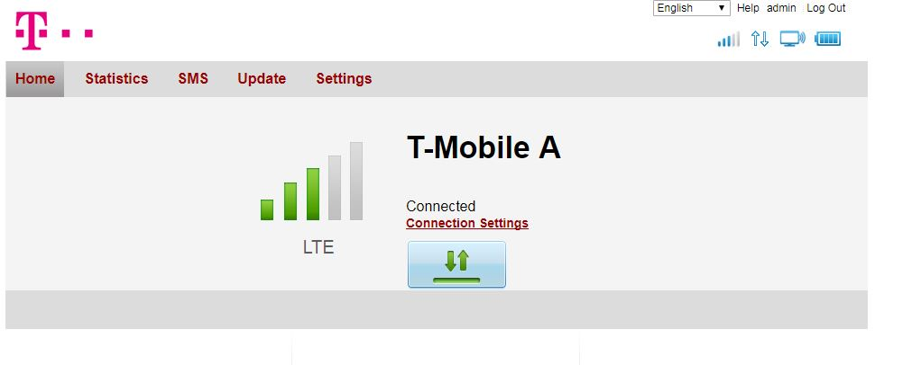

Hello, unfortunately I cannot speak german but I can't find any help with my problem anywhere. I've bought the HomeNet Turbo option. Normally when nobody's home and i'm the only one using the internet my ping is around 45-70 (I play online online games such as League of legends which needs a stable and low ping to play at a decent level) which is fine, but if someone stars watching a youtube video, my ping goes up to 150+ which shouldn't normally happen with the option i've bought. I've tried the LTE Only option and the 3G Only option in the internet control website but the ping is still the same
I've done a speed test, it's 18 mbps down and 3 mbps up.
MarioM
Hi Robert,
I think the problem is the device, because the it does not support QoS, so you won't get any traffic prioritization.
So if you have 18mbps down, an someone watches a HD or 4K youtube video, this will consume pretty much of your bandwidth. The client always uses the full bandwidth available. And 18mbps is not that much ... I think if you would get the full 150 this wouldn't be a problem.
Is your internet speed always that low?
Br,
Mario
Robert
I was thinking about upgrading my speed, didn't know if that would've helped. And yes, it's always around 18-25 down even though the packet says 50 down. Also do you think that it might be the signal from the box that makes the connection so bad? With the LTE only option i've seen in the internet command panel that I only get 2-3 "wi-fi stripes" I don't know what to call them (I've uploaded a picture for better understanding), but if I chose the 3G option the wi-fi bar is full, doesn't really change anything though. Also i'm connected through LAN not wi-fi.

Bearbeitet
von Robert
MarioM
Hmm, well a lot of factors can influence your speed
You should probably contact the support, to check if there is anything wrong with the provider in your area.
Don't trust the stripes, they are not really accurate
Br,
Mario
Bearbeitet
von MarioM
Robert
Allright thanks for your help, I'll try contacting them and maybe upgrading my speed, cheers!
MarioM
You're welcome. Let us know what you're going to do
{kind=link}